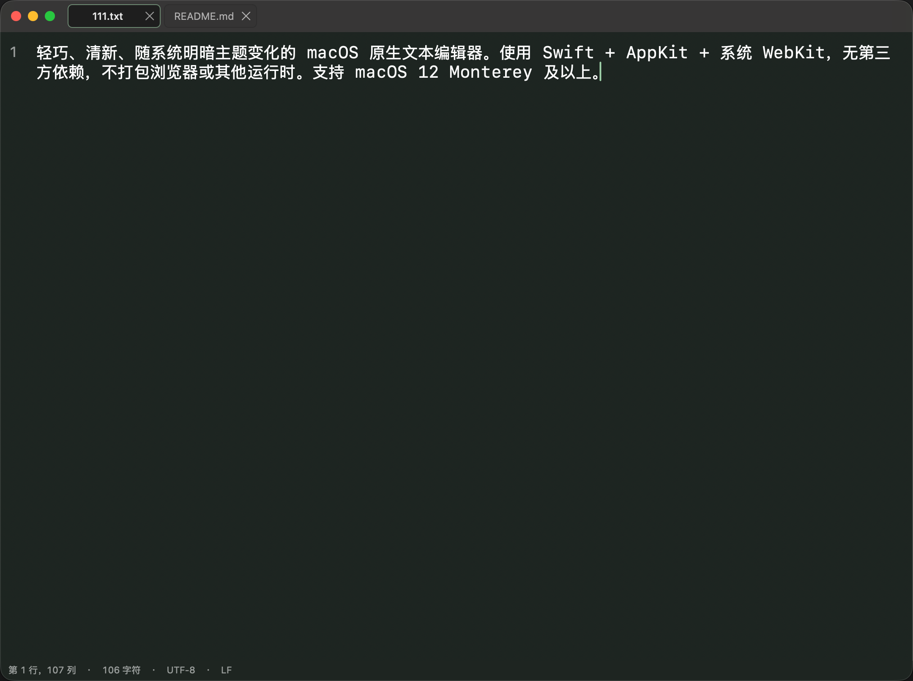
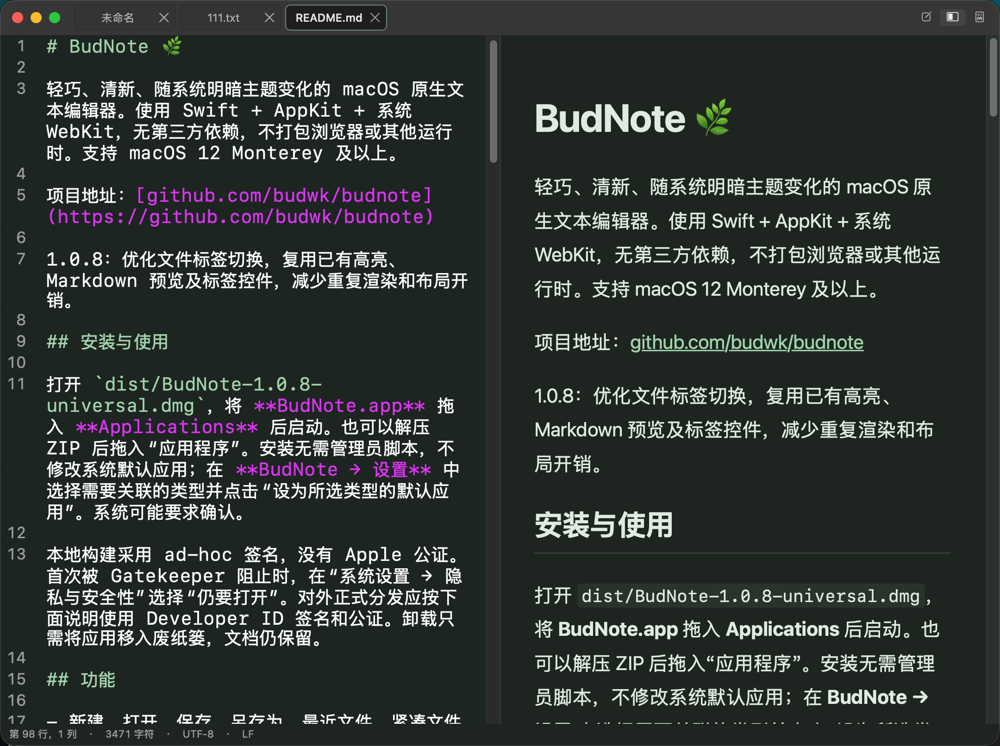

秒开启动，极低内存占用。支持多标签工作区、Markdown 双栏实时同步预览、常用代码语法高亮与多字符编码无损读写，随系统明暗主题自然切换。 Instant launch with a tiny memory footprint. Featuring compact document tabs, scroll-synced Markdown live preview, lightweight syntax highlighting, and lossless multi-encoding support.


不打包臃肿的浏览器内核或第三方运行时，完全依托 macOS 原生图形与排版引擎。 No bundled browser engines or heavy runtimes—powered entirely by native macOS frameworks.
基于 Swift、AppKit 与系统 WebKit 打造，无任何第三方库依赖。应用体积小巧，毫秒级响应，大文件也能保持流畅编辑。 Built purely with Swift, AppKit, and system WebKit with zero third-party dependencies. Instant startup and responsive editing even on large files.
支持“编辑”、“双栏实时预览”与“阅读”三种模式一键切换（⌘1 / ⌘2 / ⌘3）。右侧预览按源码行号精确跟随左侧滚动，支持标题、表格、任务列表、代码块与引用。 Switch effortlessly between Edit, Split Preview, and Read modes (⌘1 / ⌘2 / ⌘3). The live preview pane tracks your exact source line as you scroll.
融合标题栏的紧凑多标签设计，支持触控板与鼠标滚轮横向滑动、快捷键切换标签、关闭与重命名，切换标签不闪烁、不跳动全屏空间。 Unified compact titlebar tabs with horizontal trackpad/wheel scrolling and keyboard navigation. Switch documents smoothly without leaving fullscreen space.
支持 Swift、Python、Java、JS/TS、HTML/CSS、JSON、YAML、Shell、C/C++ 等关键词、字符串、注释与数字着色。内置清新的浅色与深色护眼配色。 Clean lexical highlighting for Swift, Python, Java, JS/TS, HTML/CSS, JSON, Shell, C/C++, and more. Pairs with soothing Meadow Light and Dark themes.
全面支持 UTF-8、带 BOM 的 UTF-16/UTF-32 以及中文 GB18030 编码，严格保留原文件编码、BOM 标记及 LF / CRLF / CR 换行符，亦支持一键转换为 UTF-8。 Reads and writes UTF-8, UTF-16/UTF-32 (with BOM), and GB18030. Preserves original byte encodings, BOM headers, and LF/CRLF/CR line endings faithfully.
内置简体中文与英文界面实时切换；支持 ⌘ + 滚轮无级缩放字体（10–40 pt）、区分大小写增量查找与替换、文件重命名、移动及系统版本恢复。 Instant switch between Simplified Chinese and English UI. Includes Command + Scroll font zooming (10–40 pt), incremental Find & Replace, Rename, and Move To.
遵循 macOS 人机界面指南（HIG），熟悉的快捷键让您双手无需离开键盘。 Follows Apple Human Interface Guidelines with intuitive, standard macOS shortcuts.
| 新建 / 打开 / 保存New / Open / Save | ⌘N / ⌘O / ⌘S |
| 另存为（含编码选择）Save As (with Encoding) | ⇧⌘S |
| 查找 / 查找并替换Find / Find & Replace | ⌘F / ⌥⌘F |
| 查找下一个 / 上一个Find Next / Previous | ⌘G / ⇧⌘G |
| 编辑 / 实时预览 / 阅读模式Edit / Split Preview / Read Mode | ⌘1 / ⌘2 / ⌘3 |
| 切换自动换行 / 显示行号Toggle Word Wrap / Line Numbers | ⌥⌘W / ⌥⌘L |
| 增大 / 减小 / 重置字体大小Increase / Decrease / Reset Font | ⌘+ / ⌘- / ⌘0 |
| 快速缩放字体Quick Font Zoom | ⌘ + 鼠标滚轮Mouse Wheel |
| 下一个 / 上一个文件标签Next / Previous Document Tab | ⌃Tab / ⇧⌃Tab |
| 打开偏好设置Open Settings | ⌘, |
您的文稿与创作完全属于您自己。BudNote 不收集、不存储、不上传任何个人数据。 Your documents belong solely to you. BudNote does not collect, store, or transmit any personal data.
生效日期：2026 年 10 月 16 日
感谢您使用 BudNote（Bundle ID：com.budwk.app.budnote）。我们深知文本与笔记内容的私密性，因此在设计 BudNote 之初便贯彻“本地优先、零隐私收集”的原则。
BudNote 不会收集、存储、共享或上传您的任何个人信息、设备标识符、使用习惯数据或文档内容。应用内不包含任何用户注册、登录或云端同步功能。
BudNote 运行于 macOS 应用沙盒（App Sandbox）环境中。应用仅在您通过“打开”面板、Finder 双击、拖拽文件到图标或“保存 / 另存为 / 移到 / 重命名”操作明确授权时，才会在本地读取或写入对应的文件。您的所有文档数据始终保存在您自己的 Mac 存储设备中。
nonPersistent）的系统 WebKit 容器，禁止加载外部脚本或远程追踪器。http://、https://、mailto:）时，应用才会调用系统默认浏览器或邮件客户端打开该链接。您对字体大小、明暗主题、自动换行、行号显示及界面语言的设置仅通过 macOS 系统的 UserDefaults 保存在您的本地设备中，不会上传至任何服务器。
如果本隐私政策发生任何变更，我们将在本页面同步更新。如您对隐私保护有任何疑问，欢迎发送邮件至：wizzer@qq.com。
Effective Date: October 16, 2026
Thank you for using BudNote (Bundle ID: com.budwk.app.budnote). We respect your privacy and designed BudNote from the ground up with a strict local-first, zero-data-collection architecture.
BudNote does not collect, store, share, or transmit any personal information, device identifiers, usage analytics, crash telemetry, or document contents. The app requires no user account or sign-in.
BudNote runs inside the macOS App Sandbox. It only reads or writes files that you explicitly open or save via standard macOS file dialogs, Finder drag-and-drop, or "Open With" actions. All your documents remain strictly on your local storage device.
WKWebView data store and never loads remote scripts or tracking pixels.http://, https://, mailto:) are only opened in your default macOS browser or mail client when you explicitly click on them.Your preferences (font size, theme, word wrap, line numbers, and interface language) are stored locally on your Mac using standard macOS UserDefaults and never leave your device.
If we make any updates to this Privacy Policy, we will post the revised version on this page. If you have any questions about privacy or data security, please contact us at wizzer@qq.com.
如果您在使用 BudNote 过程中遇到问题、发现 Bug 或有功能建议，欢迎随时通过电子邮件或 GitHub 与我们联系。 If you encounter any issues, find a bug, or have feature requests for BudNote, feel free to reach out via email or GitHub Issues.
开源项目地址：https://github.com/budwk/budnote Open Source Repository: https://github.com/budwk/budnote